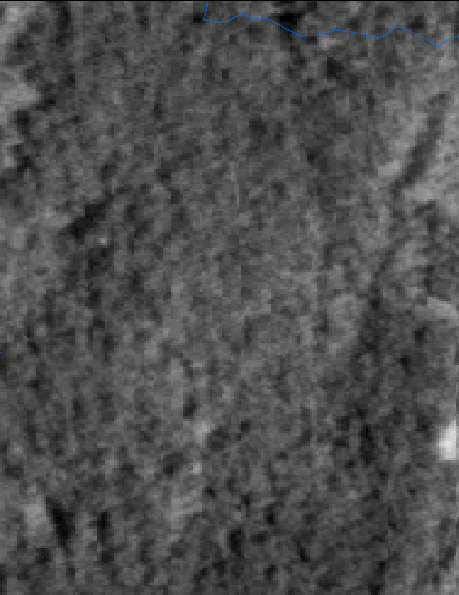
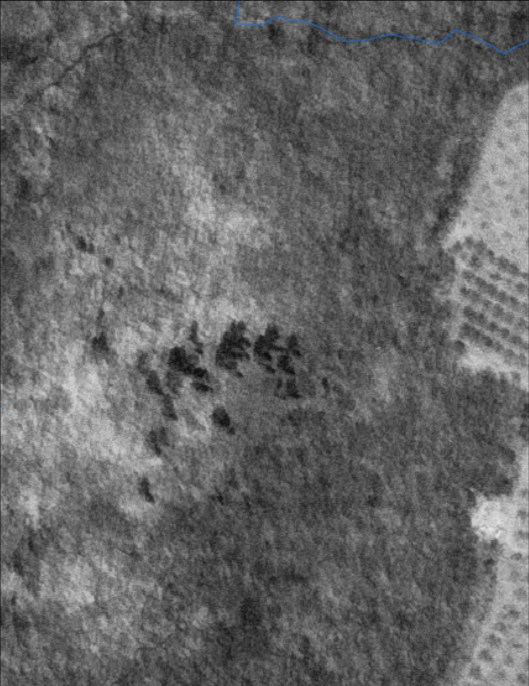
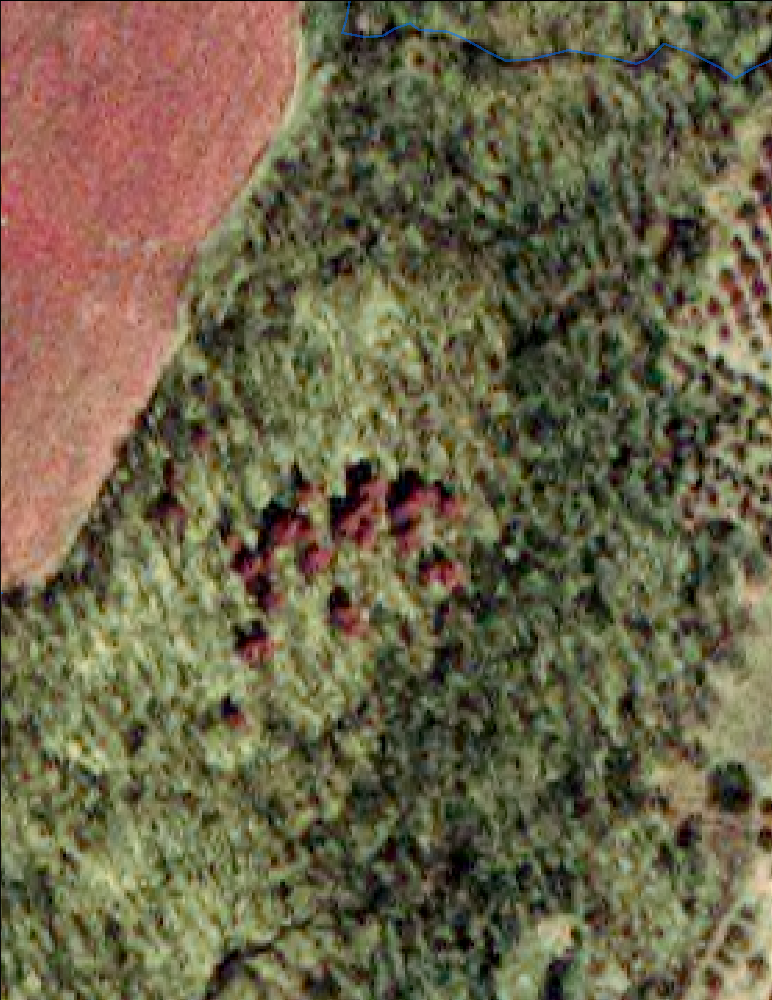
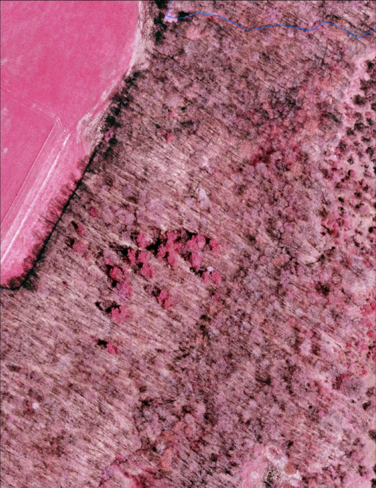
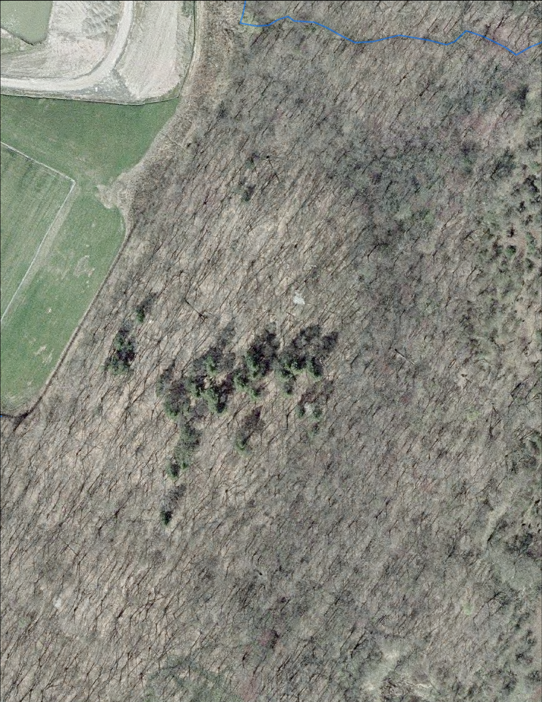
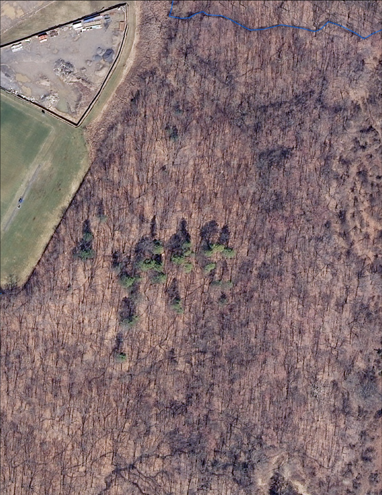
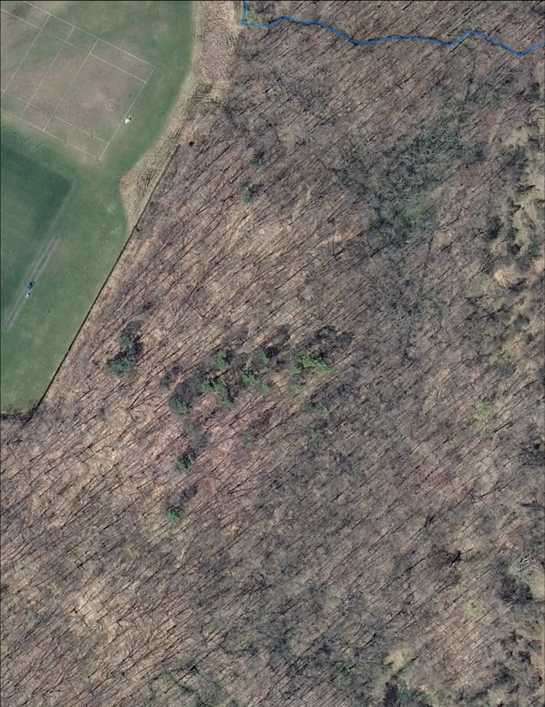

Aerial Imagery
We've collected these aerial photos of the forest from as far back as 1958. There are visible changes in how land use has changed the forest area over time.

1958
This blurry image of the past is able to represent a lack of human land management and dominance of forest.

1963
South Forest in 1963 lacked land use by the college, but notice the managed area dominating the right; an apple orchard.

1994
Here, you can see the addition of the field which occurred some time in the 70's. See how the additional creek from 1963 is now displaced.

2001
Notice that the apple orchard to the right has not been managed, and is beginning to grow over.

2004
You can see a construction lot in the north field.

2009
Note the construction in the northern field, the stony clove creek, and the faint scar of the old orchard.

2013
Notice the Stony clove creek and the overgrown orchard, which is now barely visible in the top right.
Species, Abundance
American beech,0.5855855856
ostrya,0.3513513514
carpinus,0.1081081081
witch-hazel,0.1036036036
black oak,0.0585585586
juneberry,0.0540540541
red maple,0.045045045
sugar maple,0.045045045
eastern hemlock,0.0405405405
American elm,0.036036036
sweet birch,0.036036036
red oak,0.027027027
unknown,0.0225225225
white oak,0.0225225225
white ash,0.018018018
basswood,0.0135135135
pignut hickory,0.009009009
sassafrass,0.009009009
swamp oak,0.009009009
bigtooth aspen,0.0045045045
butternut,0.0045045045
chestnut oak,0.0045045045
quaking aspen,0.0045045045
shagbark hickory,0.0045045045
Species,Edge
American beech,0.3738738739
ostrya,0.1711711712
witch-hazel,0.0945945946
carpinus,0.0720720721
black oak,0.0495495495
red maple,0.0405405405
American elm,0.036036036
juneberry,0.0315315315
red oak,0.0225225225
white oak,0.0225225225
white ash,0.018018018
basswood,0.0135135135
unknown,0.0135135135
swamp oak,0.009009009
chestnut oak,0.0045045045
eastern hemlock,0.0045045045
quaking aspen,0.0045045045
sassafrass,0.0045045045
shagbark hickory,0.0045045045
sugar maple,0.0045045045
sweet birch,0.0045045045
bigtooth aspen,
butternut,
pignut hickory,
Species,Interior
American beech,0.3430656934
ostrya,0.2919708029
sugar maple,0.0656934307
carpinus,0.0583941606
eastern hemlock,0.0583941606
sweet birch,0.0510948905
juneberry,0.0364963504
black oak,0.0145985401
pignut hickory,0.0145985401
unknown,0.0145985401
witch-hazel,0.0145985401
bigtooth aspen,0.0072992701
butternut,0.0072992701
red maple,0.0072992701
red oak,0.0072992701
sassafrass,0.0072992701
American elm,
basswood,
chestnut oak,
quaking aspen,
shagbark hickory,
swamp oak,
white ash,
white oak,
year,density (trees/Ha)
1974,731.7266667
1975,768.031746
1976,881.0793651
1977,943.7777778
1978,1008.857143
1979,1013.619048
1980,1007.873016
1981,921.2063492
1982,889.4920635
1983,873.2698413
1984,831.6190476
1985,895.7142857
1986,921.7380952
1987,917.0873016
1988,874.2619048
1989,884.9285714
1990,828.8571429
1991,840.9285714
1992,838.8392857
1993,921.1011905
1994,958.0059524
1995,1013.095238
1996,1018.750000
1997,1013.095238
1998,1020.238095
1999,1055.000000
2000,1006.095238
2001,1005.535714
2002,1031.428571
2003,1067.142857
2004,1003.452381
2005,1021.130952
2006,1024.047619
2007,1024.285714
2008,1016.666667
2009,1038.690476
2010,1089.500000
year,basal area
1974,32.23074063
1975,34.7235873
1976,39.09590476
1977,36.29939683
1978,37.50409524
1979,36.9104127
1980,34.37422222
1981,29.82904762
1982,26.70488889
1983,27.9527619
1984,28.93754762
1985,33.87480952
1986,35.75169048
1987,39.79264286
1988,36.50126984
1989,38.6215
1990,37.88230952
1991,34.35019048
1992,31.32738095
1993,34.18110119
1994,33.05229167
1995,32.72220238
1996,33.05883929
1997,32.5092619
1998,30.67102381
1999,27.83702381
2000,28.02452381
2001,29.28735119
2002,29.02574405
2003,34.44291667
2004,38.93857143
2005,42.6058631
2006,42.39642857
2007,45.52590476
2008,45.08111905
2009,46.04241071
2010,43.31686508
Forest Area, Carbon(kg/sqm)
Interior,11.2
Edge,13.7
Forest Area, Carbon(kg/sqm)
Interior,1141
Edge,1850
Forest Area, Carbon(kg/sqm)
Interior,36.7
Edge,45.4